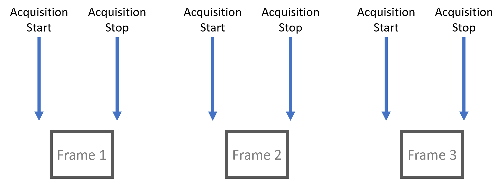
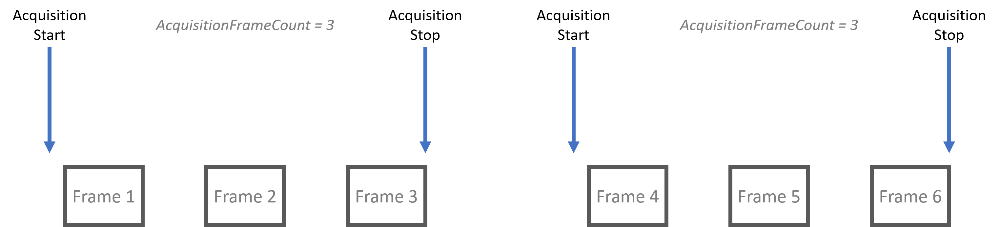
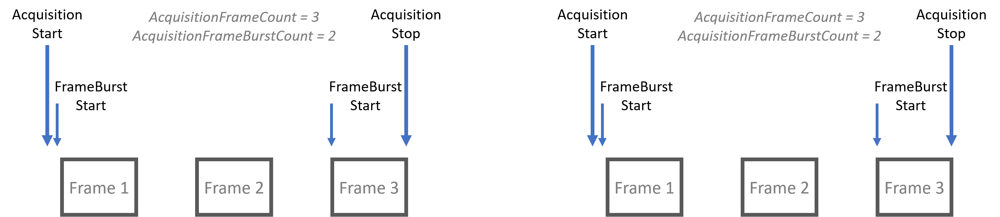
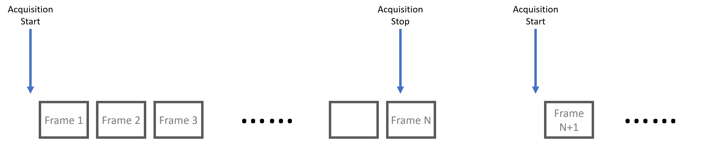

Acquisition Modes¶
There are 3 main types of acquisition modes - SingleFrame acquisition, MultiFrame acquisition, and Continuous acquisition.
SingleFrame Acquisition¶
{kind=link}
Under SingleFrame acquisition mode, one frame is acquired after AcquisitionStart is called. AcquisitionStop is an optional call as the acquisition process automatically stops after the single frame is acquired. During the acquisition process, all Transport Layer parameters are locked and cannot be modified.
 Note that if “Acquisition Stop” is executed after “Acquisition Start” but prior to a frame is available,
it is possible that no frame is acquired.
Note that if “Acquisition Stop” is executed after “Acquisition Start” but prior to a frame is available,
it is possible that no frame is acquired.
The following code block demonstrates configuring camera to single frame acquisition mode.
1 2 3 | // Connect to camera
// Get device node map
AcquisitionMode = SingleFrame;
|
MultiFrame Acquisition¶
{kind=link}
Under MultiFrame acquisition mode, frames are acquired once AcquisitionStart is called. The number of frames acquired is dictated by the parameter AcquisitionFrameCount. During the acquisition process, all Transport Layer parameters are locked and cannot be modified.
 Note that AcquisitionStop is optional under this acquisition mode.
Note that AcquisitionStop is optional under this acquisition mode.
MultiFrame with FrameBurstStart¶
A burst of frames is defined as a capture of a group of one or many frames within an acquisition. This can be achieved with MultiFrame acquisition mode as demonstrated in the diagram below. Note in the diagram, the second FrameBurstStart in each acquisition sequence only results in 1 frame acquired since AcquisitionFrameCount is set to a value of 3.
{kind=link}
Continuous Acquisition¶
{kind=link}
Under Continuous acquisition mode, frames are acquired once AcquisitionStart is called. Frames are acquired until AcquisitionStop is called. During the acquisition process, all Transport Layer parameters are locked and cannot be modified.
 Note that if AcquisitionStop is called during the last frame
then the acquisition sequence will stop after the current frame finishes.
Note that if AcquisitionStop is called during the last frame
then the acquisition sequence will stop after the current frame finishes.
The following pseudocode demonstrates configuring the camera to Continuous acquisition mode:
1 2 3 | // Connect to camera
// Get device node map
AcquisitionMode = Continuous;
|
{kind=link}